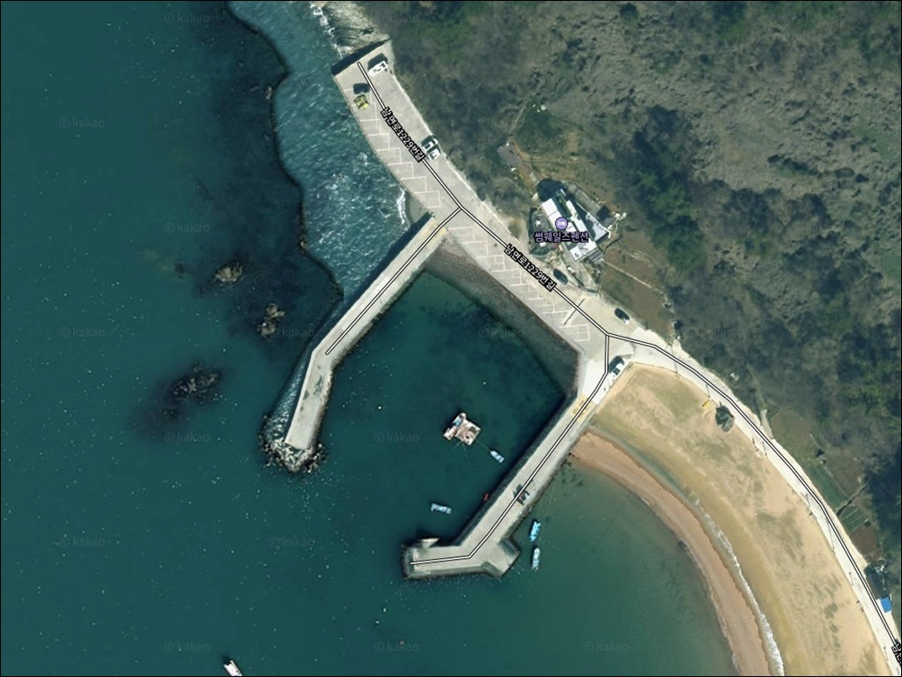
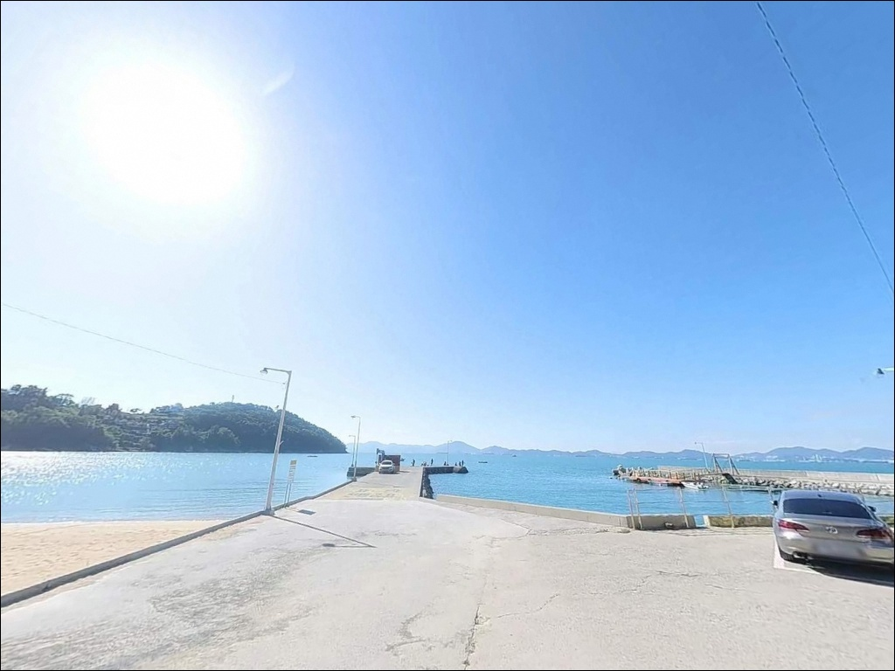
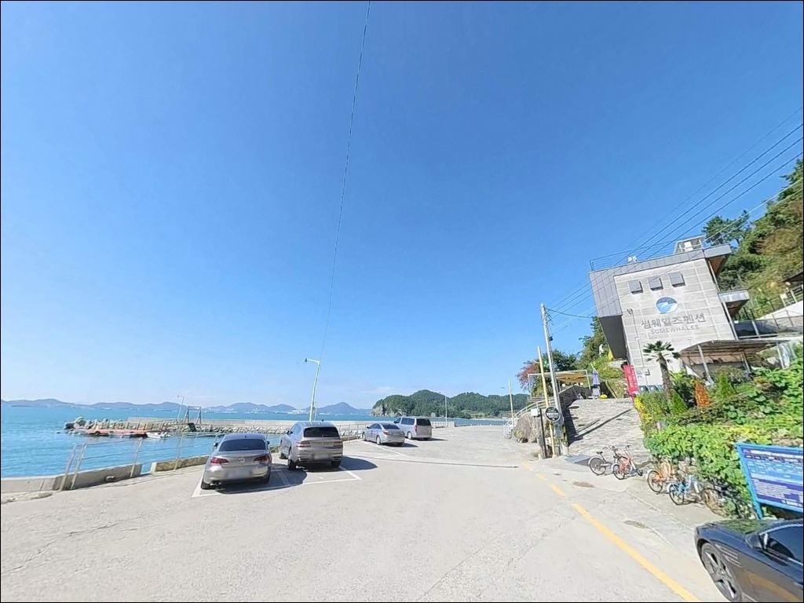
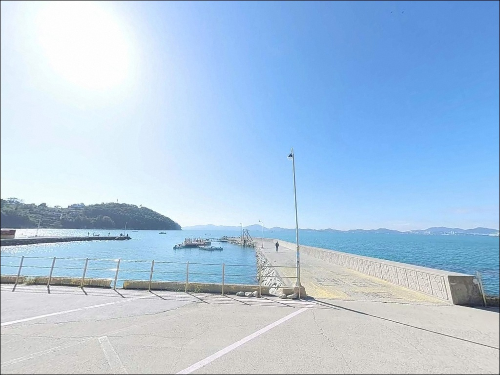
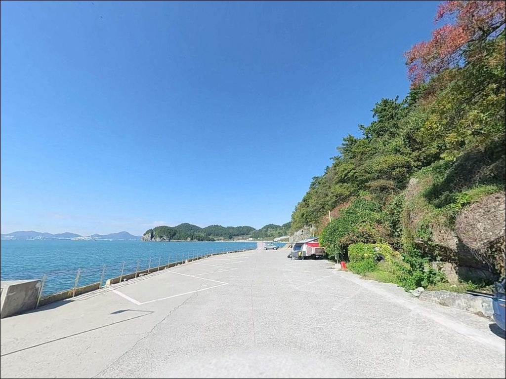
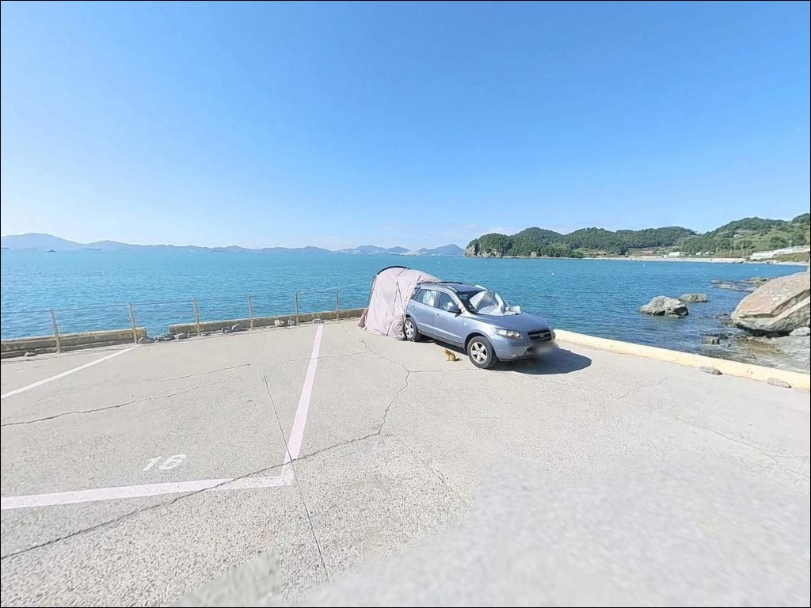
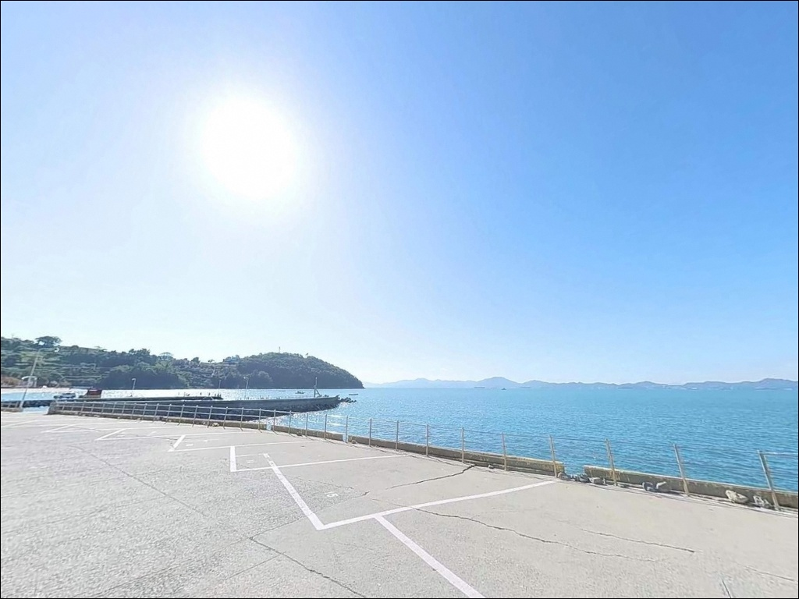
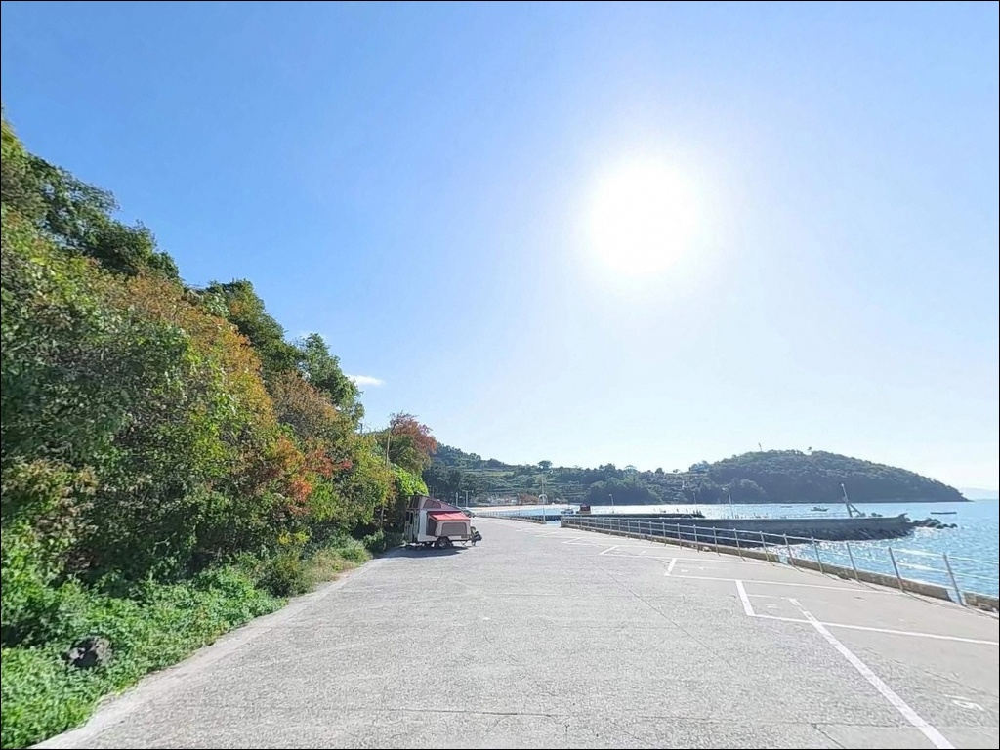
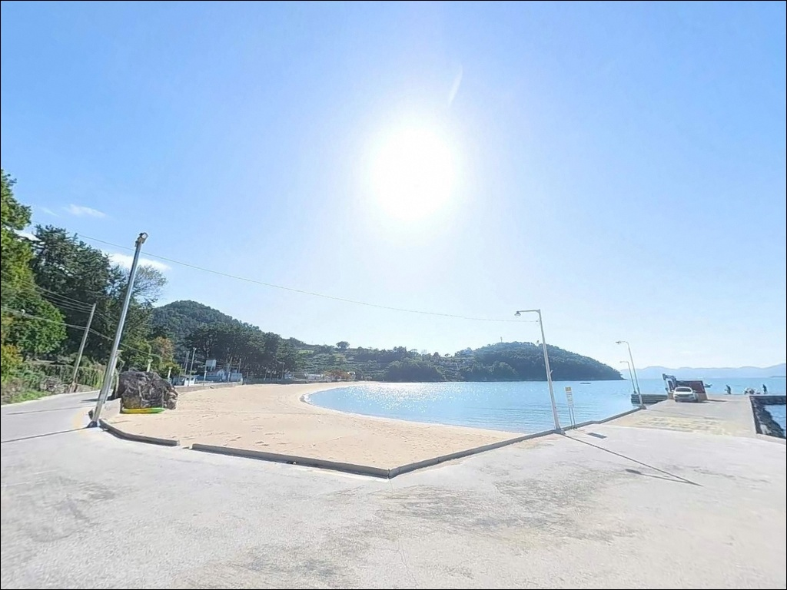

간조 때 수심 끊길 때, 남해 사촌방파제 외항 초들물에 터지는 감성돔 입질
이 페이지에는 광고(제휴 링크 포함)가 있으며, 광고 링크를 통해 구매하면 운영자가 판매 수익 또는 수수료를 받을 수 있습니다. 포인트 사진: 카카오맵 스카이뷰·로드뷰. 이 페이지의 지도·사진 이미지는 카카오맵의 실제 서비스 이미지와 다를 수 있습니다.


포인트 안내
사촌방파제
경남 남해군 남면 임포리 1195-2
물때 확인 없이 사촌방파제 외항 쪽에 들어서면
간조 전후 조류가 죽고 수심이 급격히 낮아져
어떤 채비를 써도 입질을 기대하기 어려운 상황이 됩니다.
이 방파제는 조석 차에 따른 수심 변화가 뚜렷한 구조로,
초들물부터 중날물 사이 타이밍이
외항 포인트를 제대로 쓸 수 있는 조건입니다.
사촌해수욕장 끝자락에 두 개의 방파제가
서로 마주보는 형태로 자리하고 있습니다.
우측 방파제 외항은 수중여와 테트라포트가 결합된 지형이고,
좌측 내항 방향은 사질 바닥과 접해
원투낚시 자리로 활용됩니다.
두 지형이 한 방파제 안에 공존하는 구조입니다.
이 글은 사촌방파제의
진입 동선, 차박 여건, 물때 판단 기준,
낚시 스타일별 지형 분석에 집중합니다.
조황 단정이나 특정 어종 보장은
이 글의 범위에 포함되지 않습니다.

1. 진입 동선과 차량 접근 여건
사촌방파제는 남면로를 따라 진입한 뒤
남면로1229번길을 통해 해변 방향으로 접근하는 동선입니다.
방파제 입구까지 포장도로가 이어지며
소형 승용차부터 SUV까지
차량 접근에 큰 어려움이 없는 편입니다.
해수욕장 인접 관광지 특성상 도로 상태는
남해 남면 해안 마을 중 접근성이 양호한 쪽에 속합니다.
주차는 사촌해수욕장 뒤편 공용 주차장이
주요 거점입니다.
방파제 입구 주변에도 소규모 차량 정차 공간이 있어
장비 하역 후 주차장으로 이동하는 방식이 효율적입니다.
해수욕장 주차장은 포장된 평탄 지면으로
차량 회차도 무리 없이 가능합니다.
성수기와 주말에는 해수욕장 이용객과
차량이 집중되는 편입니다.
낚시 목적 방문이라면
평일 이른 시간대에 진입해
방파제 입구 가까운 자리를 먼저 확보하는 것이
주차 경쟁을 피하는 현실적인 방법입니다.

2. 차박 환경과 야간 체류 여건
사촌해수욕장야영장이 방파제 바로 뒤편,
경상남도 남해군 남면 남면로1229번길 44에
공식 운영되고 있습니다.
일반야영장 형태로 봄·여름·가을 기간 운영하며,
야영장을 거점으로 방파제 낚시를 병행하는 구성이
이 포인트에서 가장 자연스러운 차박 동선입니다.
야간 환경은 완전한 암야가 아닙니다.
방파제를 따라 가로등이 설치되어 있고
야영장 구역에도 기본 조명이 갖춰져 있어
시야 확보는 비교적 양호한 편입니다.
가로등이 집어등 역할을 하는 구간에서는
볼락이나 전갱이 계열이 몰리는 조건이 만들어집니다.
마을과 해수욕장, 야영장이 붙어 있는 구조로
사람과 차량의 이동이 완전히 차단되지는 않습니다.
조용한 단독 차박을 원한다면
성수기와 주말보다
주중 이른 시간대가 체류 여건이 훨씬 좋습니다.
야영장 이용 요금과 운영 일정은
사촌마을회(010-6599-2361)에 직접 확인하는 편이 정확합니다.


3. 주변 편의시설 및 인프라 현황
사촌해수욕장 인근에
편의점과 소규모 매점이 운영됩니다.
다만 시즌별 운영 여부가 달라질 수 있어
성수기 이외 방문이라면
출발 전 식수와 기본 소품을 미리 챙기는 편이
안전합니다.
남면로를 따라 남면 소재지 방향으로
차량 이동을 하면
중소형 마트와 식당이 분포해 있습니다.
방파제에서 이 동선까지 접근 시간은
짧아 인프라 조달에 큰 불편은 없는 편입니다.
대형 마트나 의료기관이 필요한 경우는
남해읍 방향으로 15km권을 이동해야 합니다.
응급 상황을 대비해
비상약품과 충분한 수분은
출발 전에 갖추고 가는 것이 기본입니다.

4. 물때와 기상, 방문 전 준비사항
사촌방파제에서 가장 먼저 확인할 사항은
물때입니다.
바다타임 기준 이 일대 평균 해면하가 약 181cm로,
조석 차에 따른 수심 변화가 뚜렷한 편입니다.
외항 끝단 기준 수심이 5~8m까지 올라오는 타이밍은
초들물에서 중날물 사이 구간입니다.
간조 전후에는 외항 수심이 급격히 낮아지므로
이 타이밍을 놓치면 채비 운용 자체가 어려워집니다.
남해도 남부 해안은 안개와 돌풍이 빈번한 지역입니다.
출조 당일 아침, 기상청 예보와
해양기상정보 포털을 다시 한번 확인하는 것이
포인트 낭비를 막는 조건입니다.
외항 테트라포트 구간을 이용할 때는
구명조끼 착용이 기본 수칙입니다.
젖은 테트라포트는 미끄러움이 심하므로
논슬립 신발도 함께 챙겨야 하며,
야간에는 가로등 외 구간을 위해
헤드랜턴을 별도 준비하는 것이 안전합니다.
사촌해수욕장 개장 기간 중에는
수영 경계선 인근 낚시 구역 중복에 주의해야 합니다.
마을 어촌계 작업 공간과
방파제 주차 위치가 겹치지 않도록
진입 후 동선을 먼저 확인하는 것이 기본 매너입니다.

5. 지형 기반으로 본 낚시 여건
사촌방파제는 두 방파제가 만(灣) 입구를 마주보는 구조입니다.
우측 방파제 외항은 수중여와 테트라포트가
함께 형성된 지형으로,
바닥 굴곡이 단조롭지 않아
어류의 은신처와 먹이 활동 구간이
자연스럽게 갖춰져 있습니다.
이 구간이 이 포인트에서 가장 기대해볼 만한 자리입니다.
내항 방향은 사질 바닥이 이어지며
해수욕장 쪽으로 갈수록 모래 비율이 높아집니다.
간조 기준 내항 수심은 2~3m 수준이고
외항 끝단은 5~8m 이상까지 올라오는 편입니다.
조류는 만 안쪽으로 들어오는 방향과
외해로 빠져나가는 방향이 교차하며,
초들물 타이밍에 외항 포인트 활성도가
가장 높은 편입니다.
방파제 북쪽으로는 몽돌밭이 형성된 구간이 있어
원거리 투척 시 밑걸림이 발생하기 쉽습니다.
다만 몽돌 경계 부근은 어류 집결 가능성이 있는 구간이라
밑걸림 손실을 감수하고 탐색해볼 만한 자리입니다.
출조 전 최신 조황은 "사촌방파제 조황"으로
꼭 검색해보는 것이 좋습니다.


6. 사촌방파제에서 어울리는 낚시 스타일
외항 테트라포트와 수중여 구간에서는
릴찌낚시가 이 포인트 지형 조건에 가장 잘 맞습니다.
전유동 저부력찌 채비로
암반층 직상부를 조류에 태워 흘리는 방식이 효율적이며,
가을철에는 감성돔 계열을 노려볼 수 있는
타이밍이 열립니다.
루어낚시도 이 포인트에서 빠지기 어려운 스타일입니다.
수중여 주변을 그럽웜과 지그헤드 조합으로 탐색하면
노래미와 볼락 입질을 기대할 수 있습니다.
외항 방향으로 소형 미노우를 운용하면
농어 계열을 노리는 구간이 열리며,
해안 갯바위와 몽돌밭 구간은
도보로 이동하며 루어를 던지는 방식도 가능합니다.
내항과 해수욕장 방향 사질 구간에서는
원투낚시가 무난한 선택입니다.
청갯지렁이 미끼로 도다리·보리멸·노래미를 노리며,
야간에는 붕장어 입질이 활발한 편입니다.
내항 야간 가로등 집어 구간에서는
소형 루어나 살림 채비로
볼락·전갱이 계열이 올라오는 경우도 있습니다.
가을철 에깅도 이 포인트에서 시도해볼 수 있습니다.
내항 쪽 두족류 서식 가능성이 있는 구간을
에기로 탐색하는 방식이며,
외항 수초 지대 주변도 공략 구간에 포함됩니다.

7. 조황이 기대에 못 미칠 때 이동할 대안 포인트
사촌방파제 조건이 여의치 않다면
유구방파제가 첫 번째 대안입니다.
사촌방파제에서 2~3km 이내 같은 해역, 같은 만 구조를 공유하며
방파제 형태와 외해 노출 조건이 비슷해
낚시 방식과 어종 패턴을 그대로 적용해볼 수 있습니다.
조금 더 이동 거리를 감수할 수 있다면
가천 갯바위가 다랭이마을 인근 약 3km 거리에 있습니다.
남해도 대표 갯바위 포인트로
감성돔과 볼락 낚시에 전국 낚시인이 찾는 곳입니다.
사촌방파제와 지형 성격이 달라
이동이 아깝지 않은 대안입니다.
항촌방파제와 홍현리방파제도
남면 해안을 따라 이동 가능한 대체 포인트로
사촌방파제와 해역 조건이 유사한 편입니다.
사촌에서 플랜B 동선을 미리 설계해두면
하루 이동 거리 안에서
복수 포인트를 병행 탐색하는 구성이 가능합니다.

낚시와 차박을 한 번에
사촌방파제가 맞는 분은 따로 있습니다
물때를 맞춰 외항 끝단을 공략하는 낚시꾼이라면
사촌방파제의 수중여와 테트라포트 구간은
충분히 기대해볼 만한 지형 조건을 갖추고 있습니다.
내항 사질 구간까지 활용하면
릴찌, 원투, 루어, 에깅까지
복수 스타일로 하루를 운용할 수 있는 구조입니다.
반면 완전한 암야 차박이나
사람이 없는 고요한 해안을 원한다면
성수기 주말 사촌방파제는
조금 번잡할 수 있는 환경입니다.
물때 확인, 야영장 사전 예약, 진입 시각 판단,
이 세 가지를 갖추고 가면
낚시와 차박을 동시에 챙길 수 있는
남해 남면의 올라운드 포인트가 됩니다.
해수욕장 바로 옆 방파제에서 밤낚시를 마치고
야영장에서 하룻밤을 보내는 일정이라면,
사촌방파제는 남해 남부 해안에서
낚시와 차박의 균형을 가장 손쉽게 맞출 수 있는 포인트입니다.